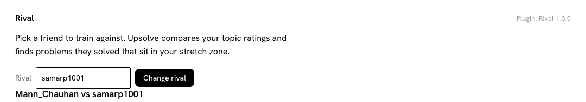
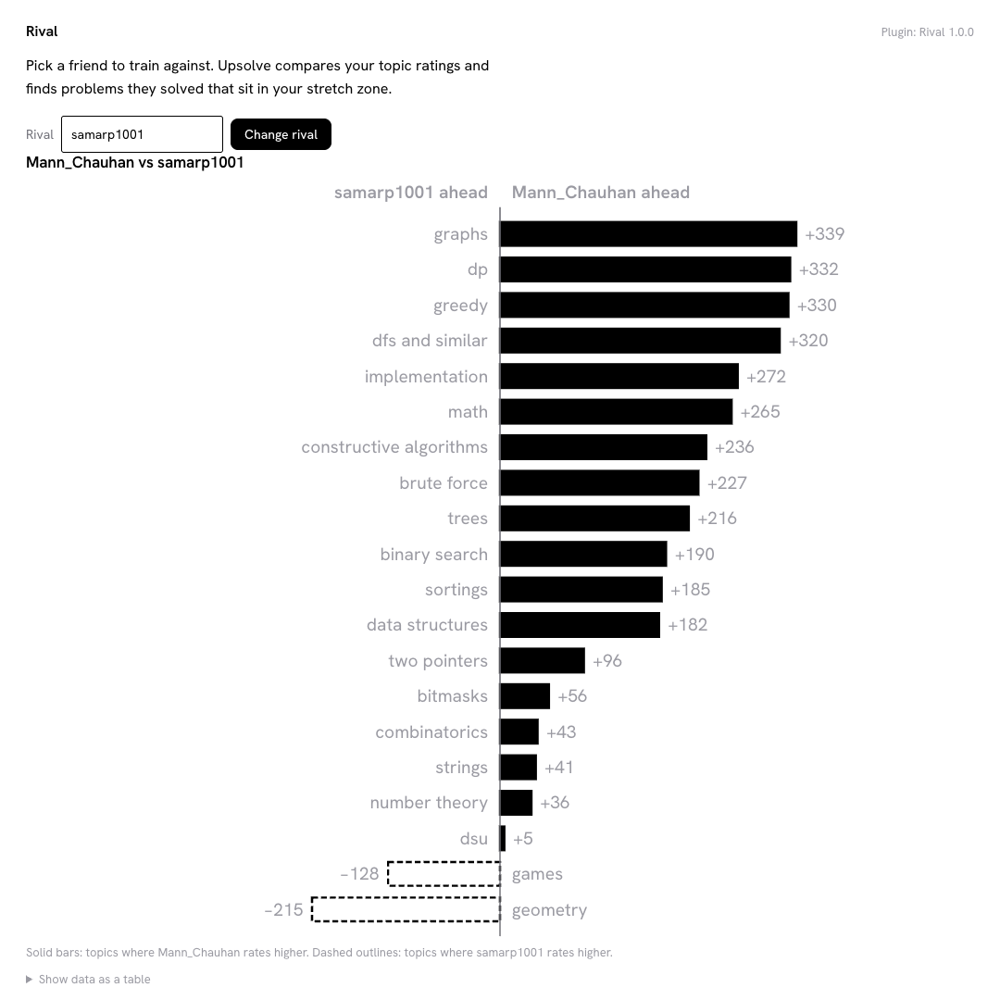
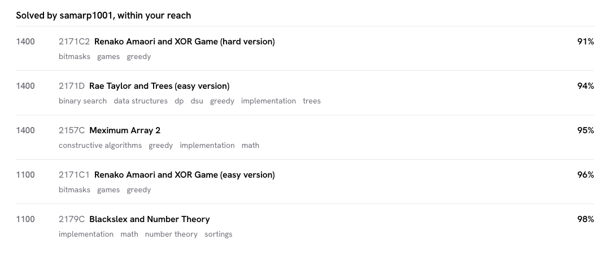
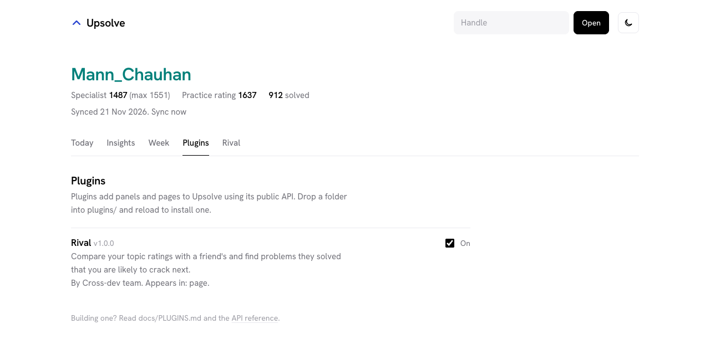

CS698B Cross-dev Project Report
A cross-dev project for The Syndicate. Rival runs inside their application, Upsolve, and is built entirely on the Upsolve API made by The Syndicate. It lets a programmer compare themselves with a friend, topic by topic, and find the friend's solved problems that they are most likely to solve next.
For the cross-dev part of CS698B, our team built a plugin for The Syndicate's project, Upsolve, a Codeforces practice coach. The course asks that cross-dev work runs inside the base application, so Rival is not a separate website: it appears as its own tab inside Upsolve.
Rival answers two questions a competitive programmer often asks about a friend: "Where are they stronger than me?" and "Which of their solved problems should I try next?" It draws a diverging bar chart of topic ratings for the two users, and lists five problems the friend solved that the user has about a 60% chance of solving.
Rival contains no server code. All of its data, including the solve-chance predictions from Upsolve's machine-learning model, comes from the Upsolve API made by The Syndicate. The whole plugin is one manifest file and about 110 lines of JavaScript.
In CS698B each team builds its own project and also builds an extension for another team's project. We were paired with The Syndicate (Ashirvad Dwivedi, Mohit Shankar Pawar, Chaitanya Kumar, Bishal Podder), whose project is Upsolve. The rule for cross-dev work is that it must run inside the base application, using what that application exposes, rather than as a separate product.
Upsolve, built by The Syndicate, reads a programmer's public Codeforces history, rates them in every topic, predicts their chance of solving any problem, and recommends problems in a 50–70% "stretch zone". It offers an API and a plugin system so that other teams can add features without changing Upsolve's own code. Rival uses both.
Practising alongside a friend is one of the most common ways programmers stay motivated. Upsolve shows a user how they are doing on their own, but not how they compare with someone else. Rival adds that social view, and turns it into something actionable: problems the friend has already solved that are within the user's reach.
| Goal | How Rival meets it |
|---|---|
| Run inside Upsolve | Rival is an Upsolve plugin and appears as its own tab |
| Use the base project's API | All data comes from the Upsolve API made by The Syndicate |
| Be genuinely useful | Shows strengths against a friend and five problems to try next |
| Match Upsolve's quality bar | Same visual style, keyboard support, chart with a data table |
| Stay safe for the host | Isolated from the rest of the page; no server code |
The user opens the Rival tab in Upsolve, types a friend's Codeforces handle and presses Compare. Rival remembers the choice, so the comparison is ready the next time the tab is opened. If the friend has never been imported into Upsolve, Rival asks Upsolve to import them first and shows the progress.

Rival draws one row per topic both users have practised. A bar to the right means the user is ahead in that topic; a dashed bar to the left means the rival is ahead. The length of the bar is the size of the gap in rating points.

Below the chart, Rival lists five problems the rival has solved and the user has not, chosen because the user has a good chance of solving them. Each shows the problem's difficulty, name, topics and the user's predicted chance, and links straight to Codeforces.

Upsolve supports plugins: small add-ons that live in a folder and appear inside the application. Rival is one of them. It consists of just two files:
plugins/
rival/
manifest.json name, version, author and where Rival appears
plugin.js the code: about 110 lines of JavaScript
The manifest tells Upsolve what the plugin is called, which file to load and where it appears. Rival appears as its own tab (the page slot).
{
"id": "rival",
"name": "Rival",
"version": "1.0.0",
"description": "Compare your topic ratings with a friend's and find problems they solved that you are likely to crack next.",
"author": "Cross-dev team",
"entry": "plugin.js",
"slots": ["page"],
"api_version": "1"
}
rival folder is placed in Upsolve's plugins folder.
Rival has no server and does not contact Codeforces itself. Everything it shows comes from the Upsolve API, made by The Syndicate:
| What Rival uses | What it is used for |
|---|---|
| Topic ratings | Both users' rating in every topic, for the comparison chart |
| Attempt history | Which problems the rival solved and the user has not |
| Chance of solving | Upsolve's machine-learning prediction for the user, for each candidate problem |
| Importing a handle | Bringing a new rival into Upsolve when needed |
| Plugin storage | Remembering the chosen rival and the last comparison |
Because the data and the model belong to Upsolve, Rival automatically benefits from any improvement The Syndicate makes to their ratings or predictions, without any change to Rival.
Upsolve draws each plugin in its own isolated area of the page. Rival's styles cannot change the rest of Upsolve, and if Rival ever hit an error, only the Rival tab would show it; the rest of the application keeps working. Users can also switch Rival off on the Plugins page.
For each topic, Rival computes the difference your rating − rival's rating. A topic is only shown when both users have at least three attempts in it, because ratings built on one or two attempts are unreliable and would make the chart misleading. Topics are sorted from where the user leads most to where the rival leads most, so the chart reads from strengths at the top to gaps at the bottom.
| Step | What Rival does | Why |
|---|---|---|
| 1 | Take up to 25 recent problems the rival solved | Recent problems match current contest styles; the cap keeps the tab fast |
| 2 | Drop any the user has already solved | Only new practice is useful |
| 3 | Get the user's chance of solving each from Upsolve's model | Uses The Syndicate's trained model, so the chances are personal and tested |
| 4 | Sort by distance from a 60% chance; keep five | The same stretch-zone idea that Upsolve's own recommendations use |
The requests for the user's chances are sent together rather than one after another, so the list appears quickly. If one request fails, that problem is simply skipped instead of stopping the whole list.
| Situation | What the user sees |
|---|---|
| No rival chosen yet | A short explanation and the handle field |
| Rival not yet in Upsolve | Live import progress, then the comparison |
| No topics in common | "You have no topics in common with at least 3 attempts each." |
| Nothing new to suggest | A message that the rival has no recent solves the user hasn't solved too |
| Part of plugin.js | Responsibility |
|---|---|
register | Adds the Rival tab to Upsolve |
render | Builds the tab: form, comparison and suggestions |
diverging | Draws the comparison chart and its data table |
waitForSync | Follows the import of a new rival and reports progress |
The question "who is stronger, and where?" is a comparison around a middle point, so a diverging chart is the natural fit: a centre line for "equal", bars to one side for the user and to the other for the rival. The eye immediately sees which side has more bars and where the longest ones are. The chart is drawn as SVG using Upsolve's own drawing helpers, so it matches the rest of the application in both light and dark themes.
| Choice | Reason |
|---|---|
| Solid bars for the user, dashed outlines for the rival | The difference is visible in shape, not only colour, and survives black-and-white printing |
| Exact gap next to every bar | No need to estimate lengths; "+339" is read directly |
| Sorted by gap | Strengths at the top, gaps at the bottom, in one reading order |
| Upsolve's colours and typeface | Rival feels like part of the app, not a bolt-on |
Rival is tested inside Upsolve, on a local copy and on the hosted site, with the following cases:
| Test case | Expected behaviour |
|---|---|
| Rival with real handles at different levels | Correct chart and suggestions (verified with Mann_Chauhan against samarp1001) |
| Rival not yet imported into Upsolve | Import starts automatically; progress shown; comparison appears afterwards |
| Handle that does not exist | The error is shown inside the Rival tab; the rest of the app is unaffected |
| Rival chosen, page reloaded | The saved rival is remembered |
| Light and dark themes | Chart and list readable in both |
| Keyboard only | Every control reachable and usable |
| Screen reader | Chart description and data table read correctly |
| Plugin switched off and on | Tab disappears and returns; Upsolve keeps working |
Upsolve's own automated test suite, written by The Syndicate, also checks the plugin system Rival depends on: manifest checks, the plugin list and plugin storage.
| Limitation | Possible improvement |
|---|---|
| One rival at a time | Compare against a small group of friends |
| Only up to 25 of the rival's recent solves are considered | Page through older solves on request |
| Topics need three attempts each to appear | Show low-evidence topics in grey instead of hiding them |
| A snapshot, not a trend | Use stored comparisons to show how the gap changes over time |
| Member | Roll no. | Main contributions |
|---|---|---|
| Divyanshu Anand | 265011 | To be filled in by the team |
| Divyanshu Lohani | 265012 | To be filled in by the team |
| Yash | 265031 | To be filled in by the team |
| Yash Akarsh | 265032 | To be filled in by the team |
| Ishan Aryan | 265016 | To be filled in by the team |
| Gaurav Verma | 265014 | To be filled in by the team |
To be written by the team. The course requires this section to be written by the team members themselves. Describe which AI tools were used, for which parts of the project, and how their output was checked.
Rival is a cross-dev project for The Syndicate. It would not exist without Upsolve, its plugin system and the Upsolve API made by The Syndicate, which provide all of Rival's data and predictions. We thank Ashirvad Dwivedi, Mohit Shankar Pawar, Chaitanya Kumar and Bishal Podder for building a platform that was straightforward to extend.